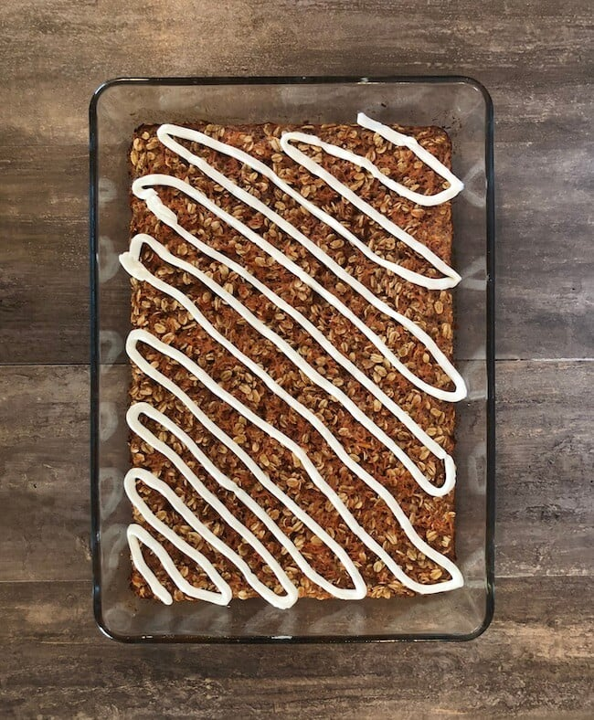

Carrot Cake Baked Oatmeal

This baked oatmeal recipe is inspired by the flavors of carrot cake, making for a nutritious and tasty breakfast option.
Ingredients
- 2 cups (180 g) rolled oats
- 1 cup (240 ml) milk of choice
- 1/2 cup (120 ml) applesauce
- 1 cup (110 g) grated carrots
- 1/4 cup (60 ml) maple syrup
- 1 tsp (5 g) baking powder
- 1 tsp (5 g) ground cinnamon
- 1/2 tsp (2.5 g) ground nutmeg
- 1/4 tsp (1.25 g) ground ginger
- 1/4 cup (30 g) chopped walnuts
Recipe
- Preheat oven to 350°F (175°C).
- In a large bowl, mix together oats, milk, applesauce, grated carrots, maple syrup, baking powder, cinnamon, nutmeg, and ginger.
- Pour mixture into a greased baking dish and spread evenly.
- Sprinkle walnuts on top.
- Bake for 30-35 minutes, until the top is golden and the oatmeal is set.
- Allow to cool before slicing and serving.